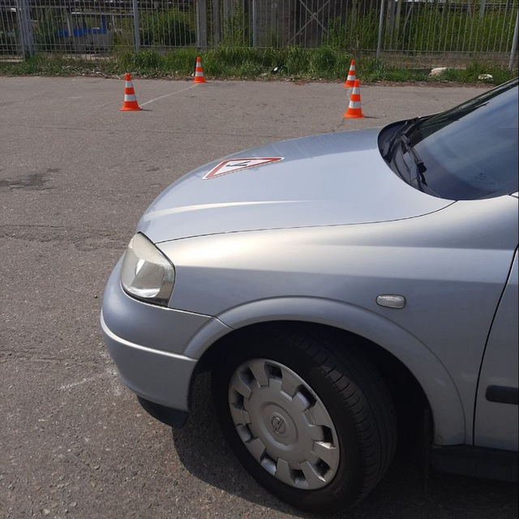

Коли мене запитують, скільки часу потрібно для того, щоб навчитися водінню, я відповідаю,!!!Увага!!! що зазвичай 30-40 годин. чим більше часу приділяється водінню, тим безпечніше і вище рівень майстерності водія в майбутньому.
Якщо ви десь почули, що хтось із ваших знайомих навчився керувати автомобілем за десять або п’ятнадцять годин, поцікавтеся, скільки разів він підфарбовував кузов протягом останнього року. На мою думку, варто навчатися далі, навіть коли ви отримали посвідчення водія. Напевно, всі бачили навчальний автомобіль, що рухається в крайньому правому ряду зі швидкістю 35 км/год. І це триває на всіх заняттях, відведених для навчання, аж до складання іспиту.
Можливо, деякі автоінструктори вважають, що після 10-15 годин занять (як це зараз прийнято в багатьох автошколах) людина сяде за кермо свого автомобіля і рушить зі швидкістю дорожнього потоку, а це може бути 70-75 км/год. Замисліться, чи можливо це? Звісно, для такої їзди людині потрібні відповідні навички, яких вона просто не набуває. Я вже не кажу про контраварійне або екстремальне водіння. Поки йдеться про звичайне штатне водіння.
Коли отримаєте посвідчення водія, ви вже не прив’язані до певного навчального маршруту, тому набуватимете власного досвіду вже на «злих» перехрестях, у щільному дорожньому потоці в години пік.